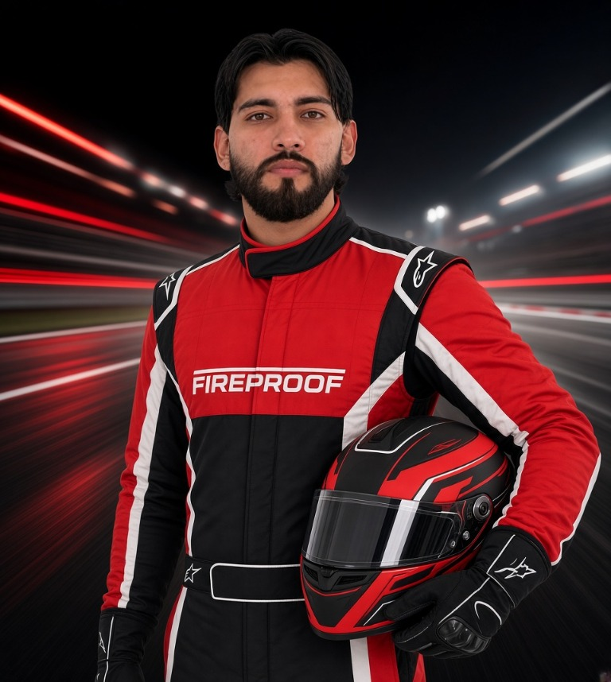
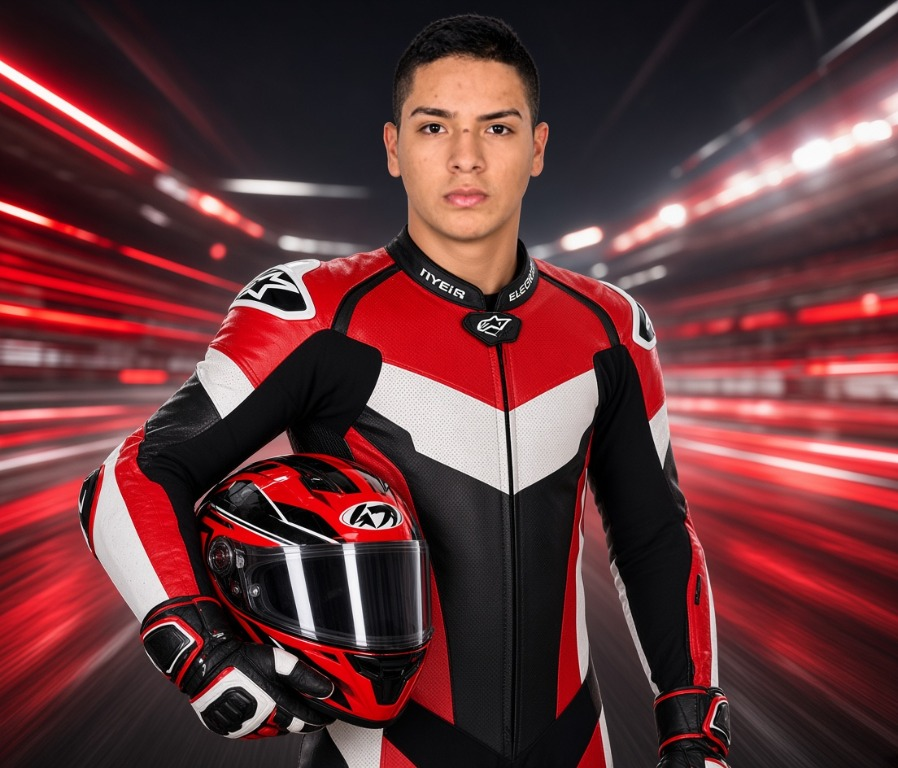
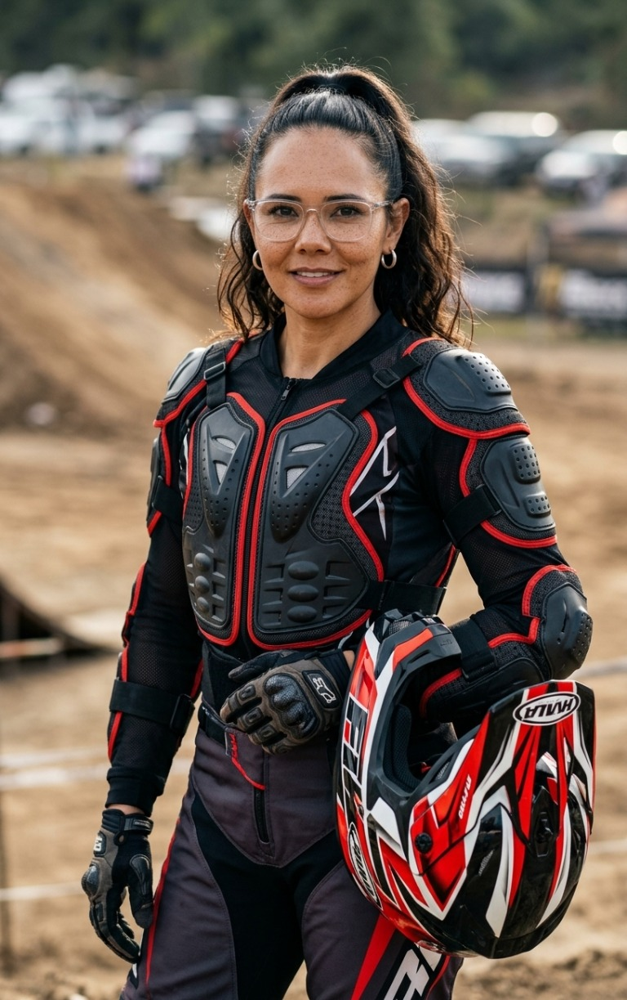
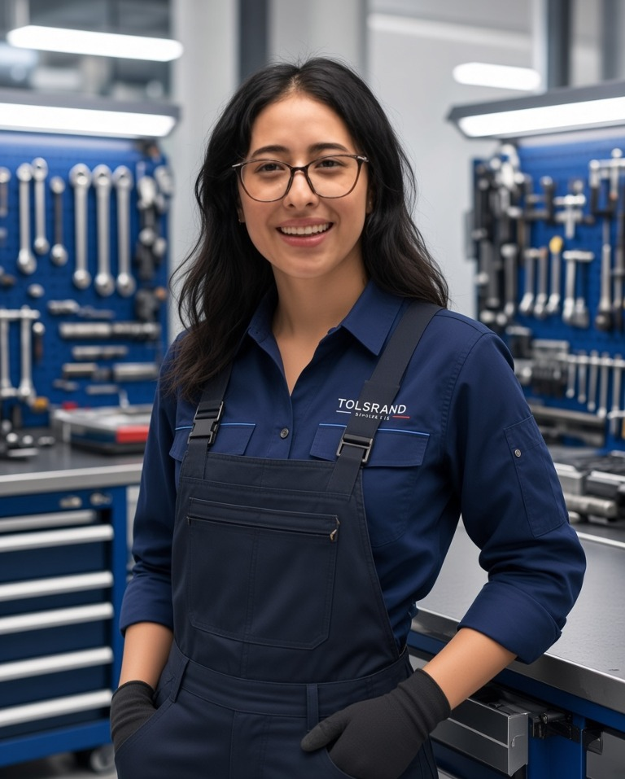
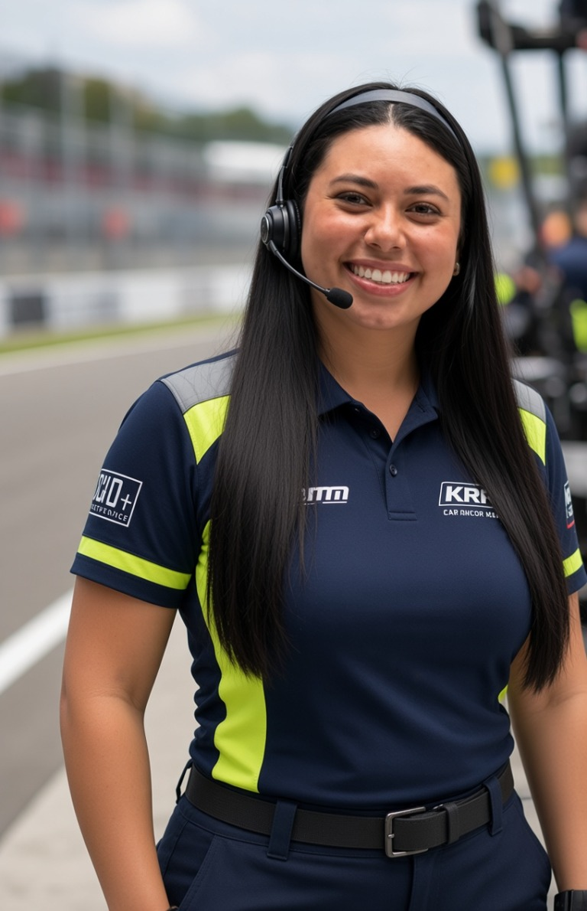

01AUTOMÓVIL · RACECRAFT
Johan Alberto Afanador
Convierte cada vuelta en una oportunidad. Te guía en trazadas, frenado y lectura de pista para que conduzcas con confianza y precisión.
EL EQUIPO / 002
Especialistas de auto, moto y pits que convierten cada sesión en un nuevo avance.
EQUIPO DE PISTA
Cinco especialistas, un mismo objetivo: que entrenes con confianza, mejores tu técnica y disfrutes cada reto.

01AUTOMÓVIL · RACECRAFT
Convierte cada vuelta en una oportunidad. Te guía en trazadas, frenado y lectura de pista para que conduzcas con confianza y precisión.

02MOTOCICLISMO · PILOTO
Te ayuda a pulir postura, trazada y control del acelerador para avanzar con seguridad, ritmo y confianza en pista.

03STUNT · CONTROL Y EQUILIBRIO
Te acompaña a dominar el equilibrio y el control en cada maniobra. La técnica progresiva y la seguridad son la base de su entrenamiento.

04MECÁNICA · PREPARACIÓN
Te enseña a entender tu vehículo y cuidar cada detalle. Diagnóstico y preparación para que llegues a pista con confianza.

05PITS · COORDINACIÓN
Coordina cada parada con comunicación y precisión. Su energía mantiene al equipo sincronizado y listo para la siguiente vuelta.
EL ESTÁNDAR ABA
Nuestro equipo combina experiencia de pista, formación deportiva y preparación en primeros auxilios. Las sesiones comienzan con briefing, revisión de equipo y objetivos claros.